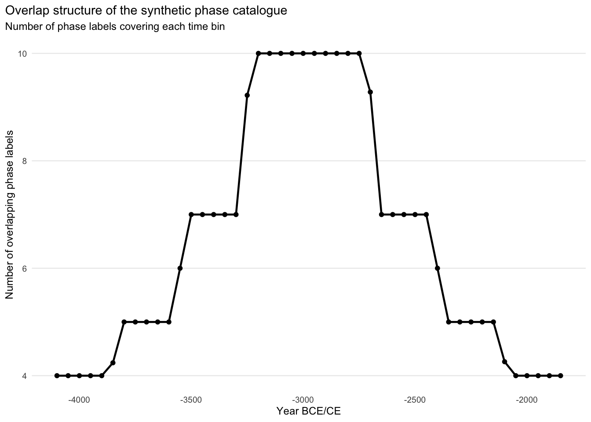
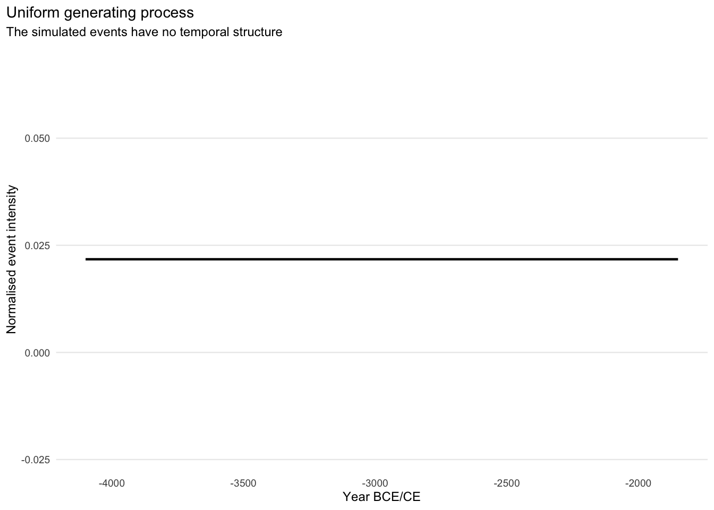
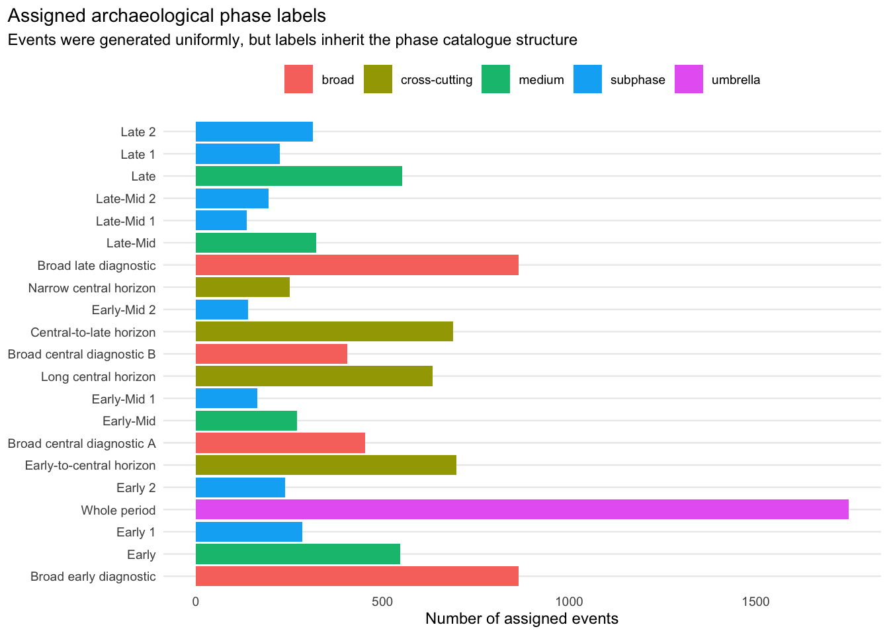
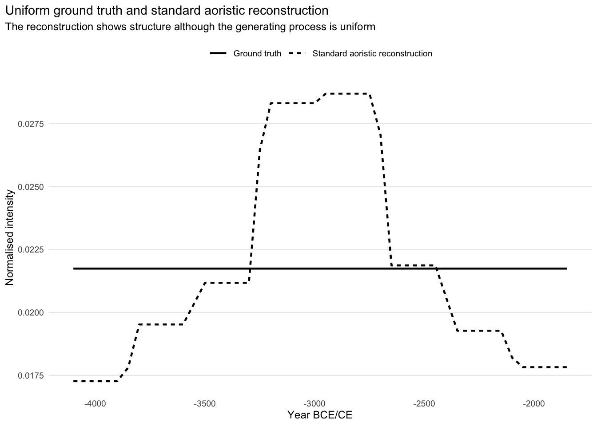
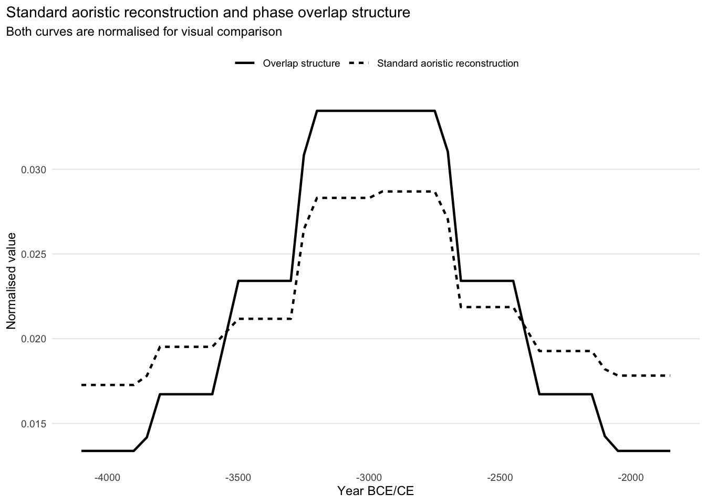
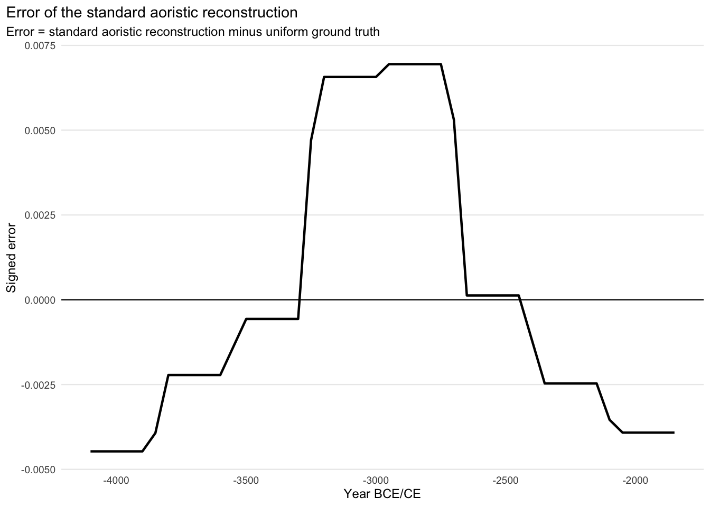
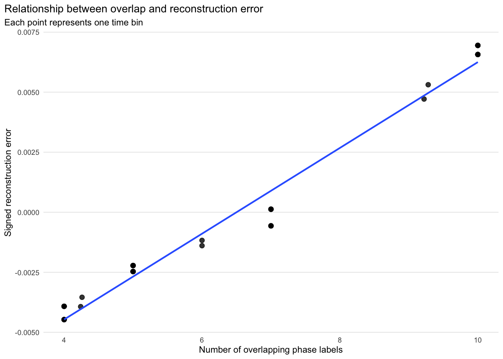

Code
library(dplyr)
library(tidyr)
library(ggplot2)
library(purrr)
library(tibble)
library(readr)
source("R/aoristic_helpers.R")This supplement isolates the mechanism by which the overlapping hierarchical structure of archaeological phase catalogues propagates into the resulting aoristic reconstructions. This effect is undesirable in itself, because it biases the reconstruction in a direction determined by an arbitrary setting that is unrelated to the empirical pattern that is to be reconstructed in the first place.
To do so, we focus on a simple question:
Is the result of a standard proportional aoristic procedure influenced by the overlap structure of the phases?
To answer this question, we construct a schematic phase catalogue with a clear hierarchical structure of overlap and inclusion. Subsequently, we simulate events from a uniform temporal probability distribution, allocate each event to a random but compatible “archaeological” phase label, and then process the resulting data set with the standard proportional aoristic reconstruction.
This allows the result to be checked against the underlying “population”. Because the true event process is uniform, every systematic deviation from a flat reconstructed curve can only result from the observation and reconstruction process itself. If the reconstructed curve follows the overlap structure of the phase catalogue, this reveals a systematic bias that results from the chronological classification itself.
We load the packages required for data processing and plotting, as well as the helper functions in supplements/R/.
library(dplyr)
library(tidyr)
library(ggplot2)
library(purrr)
library(tibble)
library(readr)
source("R/aoristic_helpers.R")The basic parameters of this document are the number of simulated events, the temporal frame, the bin width and the temporal grid.
set.seed(42)
dir.create("outputs", showWarnings = FALSE, recursive = TRUE)
dir.create("figures", showWarnings = FALSE, recursive = TRUE)
n_events <- 10000
time_min <- -4100
time_max <- -1800
year_grid <- seq(time_min, time_max - 1, by = 1)
bin_width <- 50The synthetic catalogue is designed so that its overlap structure is particularly pronounced. As the other, more empirical supplements show, this exaggerates empirical distributions, but nevertheless remains within the range of plausible real-world structures.
phase_catalogue <- tribble(
~name, ~level, ~from, ~to,
"Whole period", "umbrella", -4100, -1800,
"Early", "medium", -4100, -3525,
"Early-Mid", "medium", -3525, -2950,
"Late-Mid", "medium", -2950, -2375,
"Late", "medium", -2375, -1800,
"Early 1", "subphase", -4100, -3812,
"Early 2", "subphase", -3812, -3525,
"Early-Mid 1", "subphase", -3525, -3237,
"Early-Mid 2", "subphase", -3237, -2950,
"Late-Mid 1", "subphase", -2950, -2662,
"Late-Mid 2", "subphase", -2662, -2375,
"Late 1", "subphase", -2375, -2087,
"Late 2", "subphase", -2087, -1800,
"Long central horizon", "cross-cutting", -3525, -2375,
"Early-to-central horizon", "cross-cutting", -3812, -2662,
"Central-to-late horizon", "cross-cutting", -3237, -2087,
"Narrow central horizon", "cross-cutting", -3237, -2662,
"Broad early diagnostic", "broad", -4100, -2950,
"Broad late diagnostic", "broad", -2950, -1800,
"Broad central diagnostic A", "broad", -3525, -2662,
"Broad central diagnostic B", "broad", -3237, -2375
) |>
mutate(width = to - from, to_label = to - 1)
phase_catalogue |>
transmute(Label = name, Level = level, `Start (BCE)` = abs(from),
`End (BCE)` = abs(to_label), `Duration (years)` = width) |>
kbl()| Label | Level | Start (BCE) | End (BCE) | Duration (years) |
|---|---|---|---|---|
| Whole period | umbrella | 4100 | 1801 | 2300 |
| Early | medium | 4100 | 3526 | 575 |
| Early-Mid | medium | 3525 | 2951 | 575 |
| Late-Mid | medium | 2950 | 2376 | 575 |
| Late | medium | 2375 | 1801 | 575 |
| Early 1 | subphase | 4100 | 3813 | 288 |
| Early 2 | subphase | 3812 | 3526 | 287 |
| Early-Mid 1 | subphase | 3525 | 3238 | 288 |
| Early-Mid 2 | subphase | 3237 | 2951 | 287 |
| Late-Mid 1 | subphase | 2950 | 2663 | 288 |
| Late-Mid 2 | subphase | 2662 | 2376 | 287 |
| Late 1 | subphase | 2375 | 2088 | 288 |
| Late 2 | subphase | 2087 | 1801 | 287 |
| Long central horizon | cross-cutting | 3525 | 2376 | 1150 |
| Early-to-central horizon | cross-cutting | 3812 | 2663 | 1150 |
| Central-to-late horizon | cross-cutting | 3237 | 2088 | 1150 |
| Narrow central horizon | cross-cutting | 3237 | 2663 | 575 |
| Broad early diagnostic | broad | 4100 | 2951 | 1150 |
| Broad late diagnostic | broad | 2950 | 1801 | 1150 |
| Broad central diagnostic A | broad | 3525 | 2663 | 863 |
| Broad central diagnostic B | broad | 3237 | 2376 | 862 |
The catalogue is schematic and represents no particular chronology, only a common feature of archaeological phase systems, namely that labels exist at different levels of precision, are nested and cut across other phases.
Observations of the same date can therefore be attributed to different levels, depending on the diagnostic features and the dating precision available in each case.
write_csv(phase_catalogue, "outputs/s1_synthetic_phase_catalogue.csv")For each year, we count how many phase labels cover that point in time. The resulting overlap curve describes the phase catalogue, not the event intensity.
overlap_curve <- count_phase_overlap(phase_catalogue = phase_catalogue,
year_grid = year_grid)
overlap_curve_binned <- bin_overlap_curve(
overlap_curve = overlap_curve, bin_width = bin_width, bin_start = time_min
)
write_csv(overlap_curve_binned, "outputs/s1_overlap_curve_binned.csv")p_overlap <- ggplot(overlap_curve_binned, aes(x = year, y = overlap)) +
geom_line(linewidth = 0.8) +
geom_point(size = 1.5) +
labs(title = "Overlap structure of the synthetic phase catalogue",
subtitle = "Number of phase labels covering each time bin",
x = "Year BCE/CE", y = "Number of overlapping phase labels") +
plot_theme()
p_overlap
High values mean that a year is included in many different phases, so that events from that year may be assigned to many different labels. Low values mean that only a few labels are available for that year.
ggsave("figures/s1_overlap_structure.png", p_overlap, width = 8.5, height = 4.8,
dpi = 600)In the next step, we simulate events whose true dates are distributed uniformly along the time axis within the whole observation window. Any temporal structure in the reconstruction therefore cannot come from the event process.
events <- tibble(id = seq_len(n_events),
true_date = sample(year_grid, n_events, replace = TRUE))
true_curve <- tibble(year = year_grid, true = 1 / length(year_grid))
true_curve_binned <- bin_curve(data = true_curve, value_col = "true",
bin_width = bin_width, bin_start = time_min) |>
rename(true = value)
write_csv(true_curve_binned, "outputs/s1_ground_truth_binned.csv")p_truth <- ggplot(true_curve_binned, aes(x = year, y = true)) +
geom_line(linewidth = 0.8) +
labs(title = "Uniform generating process",
subtitle = "The simulated events have no temporal structure",
x = "Year BCE/CE", y = "Normalised event intensity") +
plot_theme()
p_truth
ggsave("figures/s1_uniform_ground_truth.png", p_truth, width = 8.5,
height = 4.8, dpi = 600)At this point, each simulated event has a “true” date. In real archaeological situations, this “true” date is, of course, usually not accessible. Instead, we usually have a typological label that is associated with the event because it is compatible with the evidence. In our examples, we ignore any cases in which the date might originate from scientific dating.
To model this observational process, each event is randomly assigned to one of the chronological labels compatible with its “true” date.
The observational model is simple:
This isolates the effect of the chronological classification, and no additional taphonomic, demographic or research biases are introduced.
assigned_events <- assign_events_to_phases(
events = events, phase_catalogue = phase_catalogue
)
write_csv(assigned_events, "outputs/s1_assigned_events.csv")Owing to the structured phase catalogue, the assigned labels are not evenly distributed, even though the true event dates are simulated uniformly. Some labels cover longer time spans, some parts of the chronology are covered by multiple labels, and each event is assigned to exactly one compatible label.
assigned_phase_counts <- assigned_events |>
count(level, phase, start, end, phase_width, name = "n") |>
arrange(start, end, phase)A first transformation thus takes place before the reconstruction, as uniformly distributed events become a structured distribution of labels.
p_assigned_labels <- assigned_phase_counts |>
mutate(phase = reorder(phase, start)) |>
ggplot(aes(x = n, y = phase, fill = level)) +
geom_col() +
labs(
title = "Assigned archaeological phase labels",
subtitle = "Events were generated uniformly, but labels inherit the phase catalogue structure",
x = "Number of assigned events",
y = NULL
) +
plot_theme()
p_assigned_labels
We now apply the standard proportional aoristic reconstruction. This involves distributing the probability mass of each event uniformly across the interval of its assigned chronological phase. An event assigned to an interval of 500 years receives a mass of 1/500 in every individual year within this interval. The aoristic sum is obtained by adding up the individual contributions of all events/intervals.
standard_curve <- run_standard_aoristic(intervals = assigned_events,
year_grid = year_grid)
standard_curve_binned <- make_reconstruction_binned(
curve = standard_curve,
value_col = standard,
output_col = "standard",
bin_width = bin_width,
bin_start = time_min
)While the ground truth is flat, the standard aoristic curve resulting from this procedure is not.
curve_comparison <- true_curve_binned |>
left_join(standard_curve_binned, by = "year") |>
left_join(overlap_curve_binned, by = "year") |>
mutate(standard = normalise_curve(replace_na(standard, 0)),
true = normalise_curve(replace_na(true, 0)),
error = standard - true, abs_error = abs(error),
squared_error = error^2)
plot_curves <- curve_comparison |>
select(year, Ground_truth = true, Standard_aoristic = standard) |>
pivot_longer(cols = -year, names_to = "curve", values_to = "value") |>
mutate(
curve = recode(curve, Ground_truth = "Ground truth",
Standard_aoristic = "Standard aoristic reconstruction")
)
p_comparison <- ggplot(plot_curves, aes(x = year, y = value, linetype = curve)) +
geom_line(linewidth = 0.8) +
labs(
title = "Uniform ground truth and standard aoristic reconstruction",
subtitle = "The reconstruction shows structure although the generating process is uniform",
x = "Year BCE/CE",
y = "Normalised intensity"
) +
plot_theme()
p_comparison
Although the simulated events originate from a uniform distribution, the reconstructed curve shows a pronounced temporal structure. Since the simulation contains no demographic or other process, the deviations from a flat curve can only come from the label assignment combined with the proportional distribution within the intervals.
ggsave("figures/s1_ground_truth_vs_standard_aoristic.png", p_comparison,
width = 8.5, height = 4.8, dpi = 600)If the standard aoristic curve is structured by the phase catalogue, it should correlate with the overlap curve.
overlap_correlation <- with(curve_comparison, tibble(
metric = c("Correlation between overlap curve and standard aoristic curve",
"Correlation between overlap curve and signed error",
"Correlation between overlap curve and absolute error",
"Correlation between overlap curve and squared error",
"Overlap-attributable RMSD of standard aoristic curve",
"Share of RMSD attributable to overlap",
"Overlap-aligned relative amplitude of standard aoristic curve"),
value = c(safe_cor(overlap, standard), safe_cor(overlap, error),
safe_cor(overlap, abs_error), safe_cor(overlap, squared_error),
overlap_aligned_rms(error, overlap),
overlap_aligned_rms(error, overlap) / rmsd(standard, true),
overlap_relative_amplitude(standard, overlap))
))
write_csv(overlap_correlation, "outputs/s1_overlap_correlations.csv")
kbl(overlap_correlation, digits = 3,
col.names = c("Diagnostic", "Value"))| Diagnostic | Value |
|---|---|
| Correlation between overlap curve and standard aoristic curve | 0.987 |
| Correlation between overlap curve and signed error | 0.987 |
| Correlation between overlap curve and absolute error | 0.453 |
| Correlation between overlap curve and squared error | 0.653 |
| Overlap-attributable RMSD of standard aoristic curve | 0.004 |
| Share of RMSD attributable to overlap | 0.987 |
| Overlap-aligned relative amplitude of standard aoristic curve | 0.186 |
The correlation between the overlap curve and the standard aoristic reconstruction is 0.987. Years covered by many labels are overestimated and years covered by few labels underestimated, so that the reconstruction largely reproduces the structure of the classification instead of the uniform truth.
fit_metrics <- tibble(
metric = c("RMSD standard aoristic vs uniform ground truth",
"MAE standard aoristic vs uniform ground truth"),
value = c(rmsd(curve_comparison$standard, curve_comparison$true),
mae(curve_comparison$standard, curve_comparison$true))
)
write_csv(fit_metrics, "outputs/s1_fit_metrics.csv")
fit_metrics |>
mutate(value = signif(value, 3)) |>
kbl(col.names = c("Metric", "Value"))| Metric | Value |
|---|---|
| RMSD standard aoristic vs uniform ground truth | 0.0041 |
| MAE standard aoristic vs uniform ground truth | 0.0034 |
RMSD and MAE are given as absolute densities of curves normalised to sum to one over the 46 bins of 50 years. Multiplied by 46 (and by 100), they correspond to the percentage of the mean bin density used in the manuscript.
p_overlap_reconstruction <- curve_comparison |>
mutate(overlap_scaled = normalise_curve(overlap),
standard_scaled = normalise_curve(standard)) |>
select(year, overlap_scaled, standard_scaled) |>
pivot_longer(cols = -year, names_to = "curve", values_to = "value") |>
mutate(
curve = recode(curve, overlap_scaled = "Overlap structure",
standard_scaled = "Standard aoristic reconstruction")
) |>
ggplot(aes(x = year, y = value, linetype = curve)) +
geom_line(linewidth = 0.8) +
labs(title = "Standard aoristic reconstruction and phase overlap structure",
subtitle = "Both curves are normalised for visual comparison",
x = "Year BCE/CE", y = "Normalised value") +
plot_theme()
p_overlap_reconstruction
ggsave("figures/s1_overlap_vs_standard_aoristic.png", p_overlap_reconstruction,
width = 8.5, height = 4.8, dpi = 600)The error is structured in time.
p_error <- ggplot(curve_comparison, aes(x = year, y = error)) +
geom_hline(yintercept = 0, linewidth = 0.4) +
geom_line(linewidth = 0.8) +
labs(
title = "Error of the standard aoristic reconstruction",
subtitle = "Error = standard aoristic reconstruction minus uniform ground truth",
x = "Year BCE/CE",
y = "Signed error"
) +
plot_theme()
p_error
p_overlap_error <- ggplot(curve_comparison, aes(x = overlap, y = error)) +
geom_point(size = 2, alpha = 0.8) +
geom_smooth(method = "lm", se = FALSE, linewidth = 0.8) +
labs(title = "Relationship between overlap and reconstruction error",
subtitle = "Each point represents one time bin",
x = "Number of overlapping phase labels",
y = "Signed reconstruction error") +
plot_theme()
p_overlap_error
The standard reconstruction thus overestimates intensity in some parts of the sequence and underestimates it in others. Monte Carlo and Bayesian approaches share the assumption of uniformity within the intervals and do not remove this systematic component (Supplement 2).
This simulation shows that the standard proportional aoristic reconstruction produces systematic temporal structure even if the underlying event process is uniform, and that this structure can be predicted from the phase catalogue alone. Phase catalogues combine broad periods, intermediate phases, short subphases and cross-cutting labels. If events are assigned to compatible labels and each is spread uniformly over its interval, the aoristic sum takes on part of the structure of the catalogue.
Supplement 2 compares alternative reconstruction strategies, including the phase correction proposed in the main text, with respect to the coupling between the reconstructed intensity and the overlap structure.
sessionInfo()R version 4.5.3 (2026-03-11)
Platform: aarch64-apple-darwin20
Running under: macOS 27.2.1
Matrix products: default
BLAS: /Library/Frameworks/R.framework/Versions/4.5-arm64/Resources/lib/libRblas.0.dylib
LAPACK: /Library/Frameworks/R.framework/Versions/4.5-arm64/Resources/lib/libRlapack.dylib; LAPACK version 3.12.1
locale:
[1] en_US.UTF-8/en_US.UTF-8/en_US.UTF-8/C/en_US.UTF-8/en_US.UTF-8
time zone: Europe/Berlin
tzcode source: internal
attached base packages:
[1] stats graphics grDevices datasets utils methods base
other attached packages:
[1] readr_2.1.6 tibble_3.3.1 purrr_1.2.0 ggplot2_4.0.3 tidyr_1.3.1
[6] dplyr_1.2.1
loaded via a namespace (and not attached):
[1] Matrix_1.7-4 bit_4.6.0 gtable_0.3.6 jsonlite_2.0.0
[5] crayon_1.5.3 compiler_4.5.3 renv_1.2.0 tidyselect_1.2.1
[9] parallel_4.5.3 splines_4.5.3 scales_1.4.0 yaml_2.3.12
[13] fastmap_1.2.0 lattice_0.22-9 R6_2.6.1 labeling_0.4.3
[17] generics_0.1.4 knitr_1.50 rbibutils_2.4.1 pillar_1.11.1
[21] RColorBrewer_1.1-3 tzdb_0.5.0 rlang_1.3.0 xfun_0.54
[25] S7_0.2.2 bit64_4.6.0-1 cli_3.6.6 mgcv_1.9-4
[29] withr_3.0.3 magrittr_2.0.5 Rdpack_2.6.6 digest_0.6.39
[33] grid_4.5.3 vroom_1.6.7 hms_1.1.4 nlme_3.1-168
[37] lifecycle_1.0.5 aoristAAR_0.1.1 vctrs_0.7.3 evaluate_1.0.5
[41] glue_1.8.1 farver_2.1.2 rmarkdown_2.30 tools_4.5.3
[45] pkgconfig_2.0.3 htmltools_0.5.9